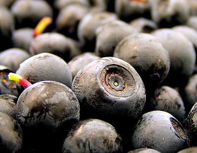
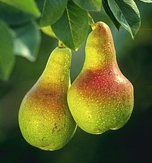
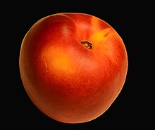
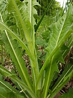
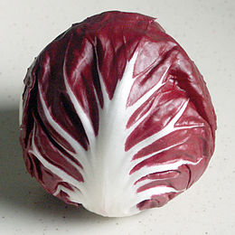

| TIPO | NOME | DESCRIZIONE | FOTO |
|---|---|---|---|
| FRUTTA | Mirtillo | Il mirtillo è il nome comune dato alla bacca di colore blu, ottenuta da diverse varietà della sezione Myrtillus del genere Vaccinium e inclusa nella categoria dei frutti di bosco. Il più diffuso in Europa è il mirtillo nero, ottenuto dalla specie Vaccinium myrtillus, mentre in Nordamerica la varietà più diffusa è quella ottenuta da piante dello stesso genere, ma appartenenti alla sezione Cyanococcus. I mirtilli rossi, invece, appartengono al sottogenere Oxycoccus. Il mirtillo è molto usato nella preparazione di marmellate, crostate e gelati. |  |
| Pera | La pera è il frutto delle piante del genere Pyrus a cui appartengono molte specie differenti. È ricca di zuccheri semplici, specialmente fruttosio. La prevalenza di potassio la rende adatta ad una dieta iposodica (cioè una dieta povera di sodio). La pera è disponibile per gran parte dell'anno e si consuma al naturale o cotta in sciroppo di zucchero. Nell'industria alimentare viene utilizzata prevalentemente per la produzione di succhi e sciroppati. |  | |
| Pesca | La pesca è un frutto succoso e zuccherino, ha la buccia di colore giallo-rossastra ma anche bruna, che può essere sottile e vellutata o liscia (nettarine). La polpa è dolcissima e profumata e, secondo la varietà, può essere gialla o bianca con venature rosse più evidenti in prossimità del nocciolo. Sono state selezionate varietà a polpa bianca con il colore rosso esteso a tutta o quasi la polpa. |  | |
| VERDURA | Cicoria | In cucina l'utilizzo più frequente è quello delle foglie nelle insalate (fresche o cotte). Se si fa un uso costante delle foglie fresche si ottengono anche benefici medicamentosi. Per evitare l'eccessivo gusto amaro le foglie vanno raccolte prima della fioritura o ne va eliminata la parte più interna. Si fanno poi sbollentare in abbondante acqua leggermente salata e si possono successivamente passare in padella con olio, aglio e peperoncino. |  |
| Radicchio | Nelle prime fasi di crescita, la pianta presenta foglie verdi, talvolta appena screziate di rosso, con il grumolo centrale assente o solo accennato. Successivamente vengono emesse grandi foglie rotondeggianti, con colorazione amaranto e nervature centrali bianche, che formano un grumolo sferico o leggermente schiacciato all'apice. Consistente e compatto, simile a quello del cavolo cappuccio, può sfiorare il mezzo chilo. Ha consistenza piuttosto croccante e sapore amarognolo. |  |